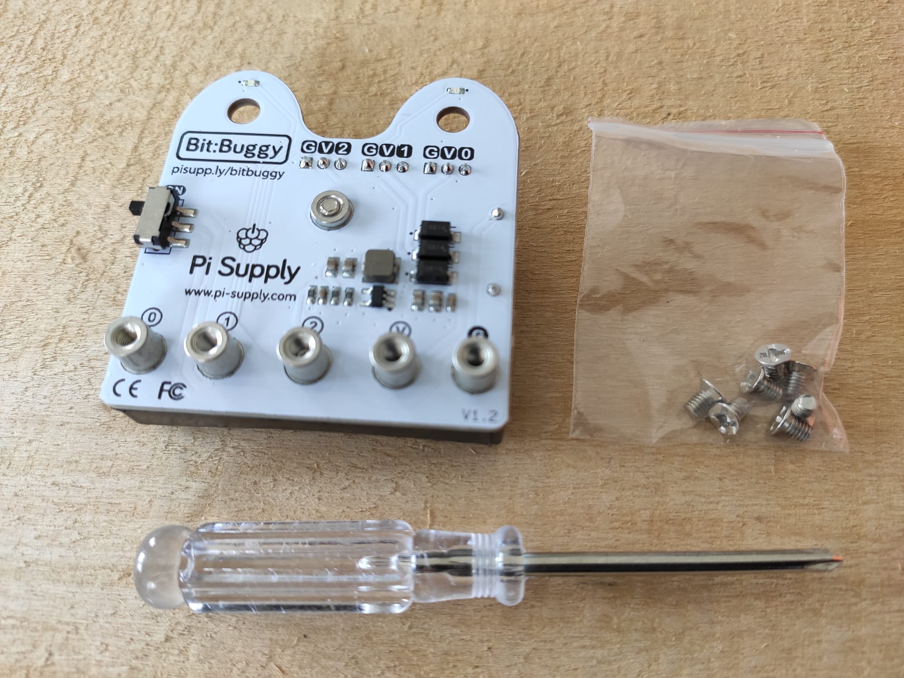
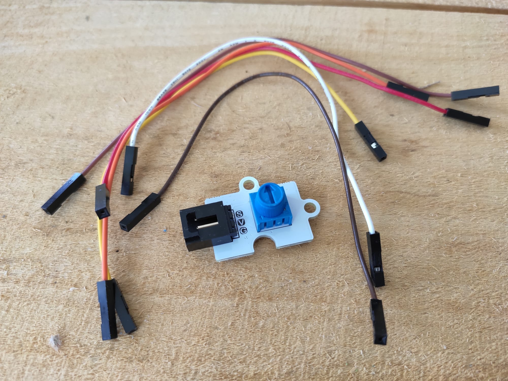
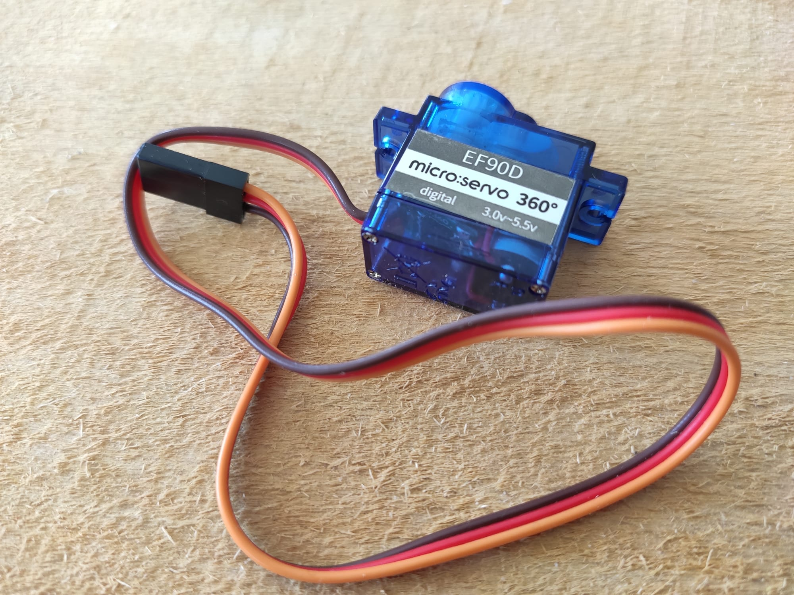
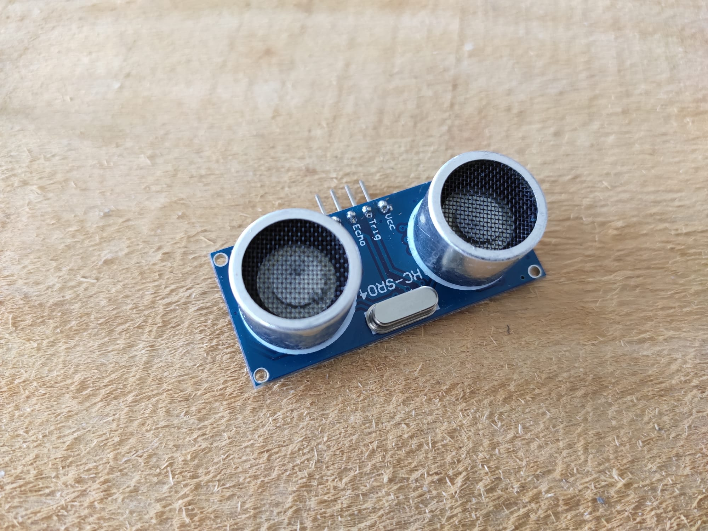
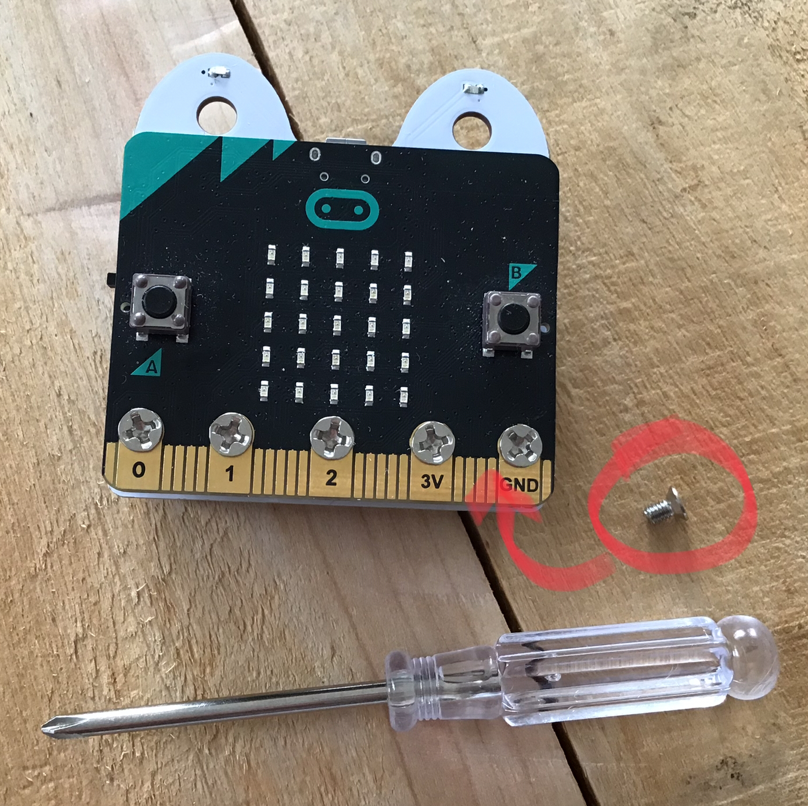
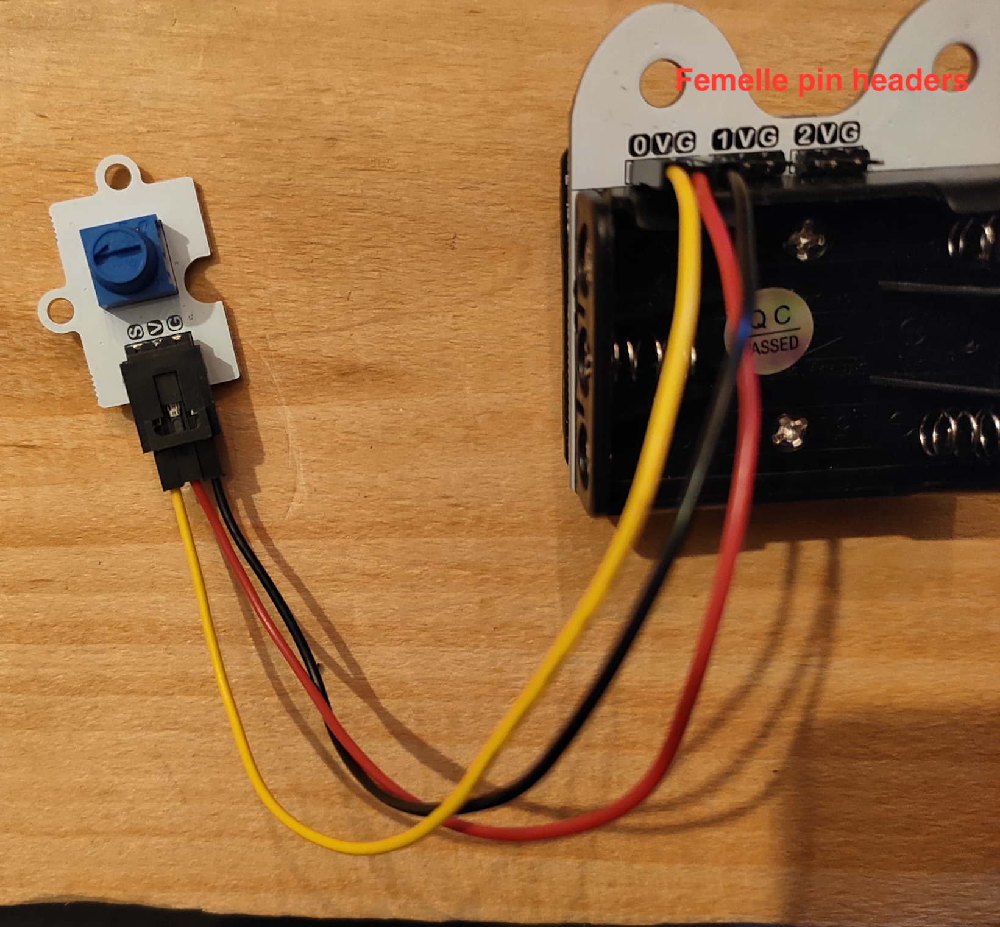
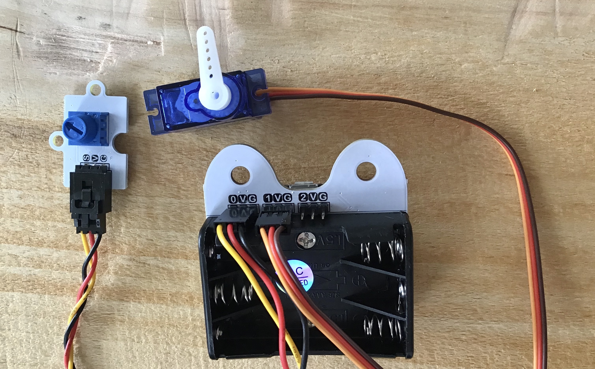
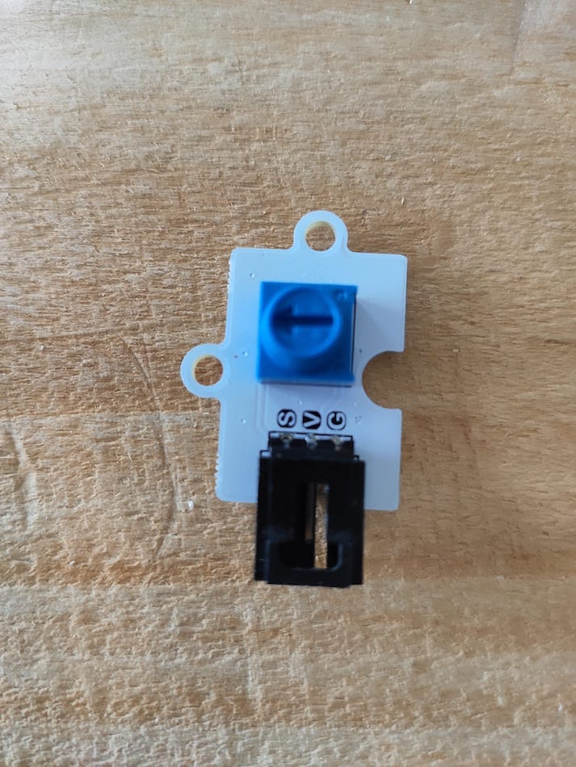
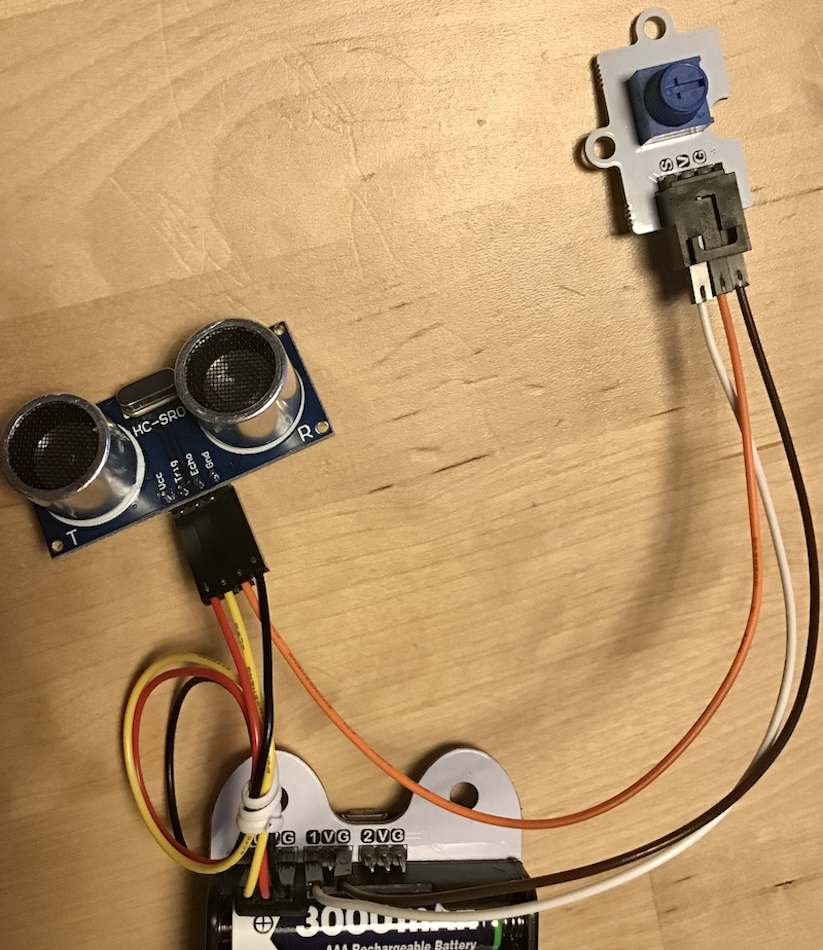
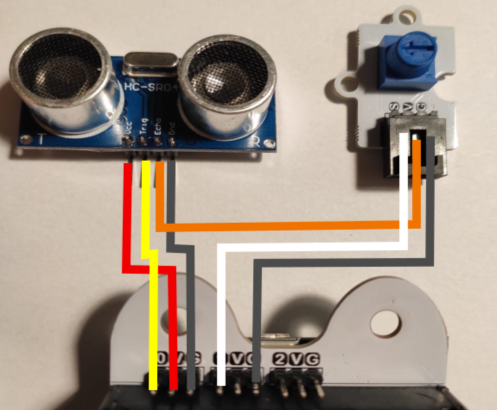

Input and outputs
This morning we saw how the micro:bit comes equipped with integrated sensors and actuators. For mobile robotics, those are not enough, so this afternoon you'll see how it is possible to add sensors and actuators to the micro:bit to go towards our goal of building an autonomous mobile robot.
What you will need
| Buggy mainboard | Potentiometer and wires | Servo motor | Ultrasound sensor |
|---|---|---|---|
|  |  |  |  |
Figure: Necessary equipment.
Every pair of learners will need:
- The equipment required in the previous session
- One bit:buggy mainboard, 5 screws and a screwdriver (all in the bit:buggy box)
- One potentiometer
- 6 Wires female-female
- One servo motor (in the bit:buggy box)
- One ultrasound sensor (the HC-SR04)
- 3 x AAA batteries
GPIO
Look at the micro:bit. On its bottom there is a strange set of golden lines (it's not gold, don't start to rip it appart and try selling it!). Those are conductive connectors that will allow you to connect more sensors and actuators to it and interact with them. They are what we call inputs and outputs or GPIO (general purpose input/ouputs) which are standards in the world of microcontrollers. Each connector is called a pin, and most of them can be used as input or output. The micro:bit has about 20 of them in total (more information here).
Adding a simple sensor
The first sensor you will add is called a potentiometer. For this you will use one pin as an input. You'll learn how to capture the position of the potentiometer in our program.
Before doing any programming, you will have to take care of the physical connection between the potentiometer and the micro:bit. Begin by disconnecting the micro:bit from the computer. Before doing any changes in the wiring of a controller, always power it off !
Then, screw the micro:bit on the bit:buggy mainboard using 5 screws (see figures below). This will give you access to pin0, pin1, pin2, 3.3V and Ground through femelle pin headers on the back of the buggy board. In this activity, you will use the pins pin0 (0), 3.3V (V) and ground (G). Connect the wires as shown in the image below (the colors are not important although we usually try to put a black cable for ground and a red one for power sources).
| Screwing onto the buggy mainboard | Connecting the potentiometer |
|---|---|
|  |  |
Figure: Connecting the potentiometer to the micro:bit. DO NOT PUT THE BATTERIES IN YET !! You might destroy the micro:bit if you do so...
In this montage, the potentiometer will ouput through S (for signal) a portion of the input voltage (3.3V) depending on the position of the knob.
To access the information of the pins in python, the microbit library defines for us the objects pin0, pin1, etc... Those objects come with two useful functions: read_analog() or read_digital() (see doc here). If we are interested in getting a binary information (is the voltage on the pin high or low?), we use read_digital(). That's what we'd use for a button (pressed or not). If we want more we have to use the function read_analog(). This is our case as we want to know the position of the knob, therefore, we want to know which portion of 3.3V is on pin0.
exercise 1
- 1.1. pin0.read_analog() returns an integer. Program micro:bit to display the value returned by this function using the function display.scroll() every 100 ms. Turn the knob to find what is the range of values that pin0.read_analog() can return. Can you display the value every 100 ms ?
- 1.2. Use the function displayPositiveNumber(n) defined this morning to display the position of the knob every 100 ms. Remember that this function works well only for arguments in [0-25], so you'll need to do some scaling in between.
- 1.3. (Optional) If you are not comfortable with linear mapping (rescaling in our case), you could later take the time to define a function to do that for you so that map(n, n_min,n_max,res_min,res_max) = res_min + n.(res_max-res_min)/(n_max-n_min).
Solution exercise 1.1
The value returned by read_analog() is not in any physical unit. It's just a number encoded in 10 bits, meaning that it's value can go theoretically from 0 to 1024. However, this corresponds to the measure of a voltage on pin0 that can go from 0 to 3.3V (and should never go above 3.3V !).
While there exist many kinds of sensors, many of them work in a similar fashion as the potentiometer. A sensor will often require a power source (3.3Volts and ground), and it will output a signal.
Controlling a motor
Now that the micro:bit can sense, you will learn how to make it act on its environment with a motor. For this get one of the motors out of the bit:buggy kit. Notice that the motor comes with its cable. Power off the micro:bit by disconnecting it from the computer, then plug the motor as shown in the image below (connection on pin1, taking care of putting the brown/black wire facing the letter G). To make the rotation of the motor more noticeable, you can take one of the white plastic end that comes in the bag where you found the motor. This piece is called a servo horn and allow for easy mechanical constructions with the motor.

Figure: Connecting the servo motor to the micro:bit.
There are many kinds of motor. We will come back to this later. The one you'll use now is called a continuous servo motor. While the way it works will likely seem a bit obscure, it is a great choice to start with as it is very easy to control as it requires no extra components.
If you are just interested in making the motor turn, skip this paragraph. For the others, here is a little theory: Servo motors are controlled using pulse width modulation (PWM). PWMs are signals made out of regular high voltage pulses with varying width. The motor will measure the width of the pulses and will turn depending on it. In our case, to control the servo motor, we need to send a high pulse every 10 milliseconds. The width of the pulse needs to be 5% to 25% the period of the pulse (0.5ms to 2.5ms long) to be taken into account by the motor. More about PWMs here and more about continuous servo motors here.
Practically, to control the motor you will need to have pin1 output a high pulse with a 10 ms period. As the documentation explains, to do so we can use the instruction pin1.set_analog_period(10). To change its speed you will have to use the function pin1.write_analog(d) with d in [50-250].
exercise 2
- 2.1. Program the micro:bit to make the motor turn. Try different values for d to make it turn at different speeds. What argument do you need to give to the write_analog() function to make the motor stop ? Does the function pin1.set_analog_period(10) need to be in the loop ?
- 2.2. Program the micro:bit so that you can control the speed of the motor by turning the potentiometer.
- 2.3. (Optional) Add a second motor and program the micro:bit so that you can set the speed of both motors independently using the buttons and potentiometer. Before programming, imagine how your idea would feel for the user to make it as user friendly as possible.
Notice that the motor is quite similar to the potentiometer in terms of wiring: it needs a power supply (3.3V and ground) and a signal, except that this time the signal is going from the micro:bit to the motor. This applies to many actuators.
Measuring a distance
The last component you will learn to interface today is the HC-SR04. The HC-SR04, while it is commonly called an "ultrasonic distance sensor" is both a sensor and an actuator. It sends an ultrasound signal when the controllers orders it to do so and it informs the controller when it receives an echo. Thanks to the time between emission and reception and a bit of physics (distance = time * velocity) we can estimate the distance of obstacles facing the sensor.
Do the montage shown in the pictures below. Add the batteries only once you double checked the montage. This montage is more complex than the previous ones and here is the reason why:
- The HC-SR04 needs about 5V of power and by adding the batteries the V pins of the buggy board go up from 3.3V to about 5V (more 3x1.5V in reality).
- The HC-SR04 sends an echo of 5V which if plugged directly to micro:bit could burn it. The montage with the potentiometer set at its mid-position allows to solve this problem1.
| Potentiometer at its mid-position | Montage | Circuit diagram |
|---|---|---|
|  |  |  |
Figure: Using the HC-SR04 with the micro:bit: set the potentiometer to its mid-position, do the wiring.
One way to use the HC-SR04 in our program is to use the following function:
from microbit import *
import machine
import utime
pinTrig = pin0
pinEcho = pin1
pinEcho.set_pull(pinEcho.NO_PULL) # some electronics that we can't explain you now
def get_dist_in_cm():
# send a high pulse to the trigger of HC-SR04
pinTrig.write_digital(0)
utime.sleep_us(2)
pinTrig.write_digital(1)
utime.sleep_us(10)
pinTrig.write_digital(0)
# measure the time in microseconds that it takes to receive a high pulse on the echo pin.
d = machine.time_pulse_us(pinEcho,1,10000)# timeout in 10000 us = 0.01 s
if d>0:# echo received
return d/Constant
else:# timeout returns -1
return d
exercise 3
- 3.1. Read the code to verify if it matches the sensor specifications that we defined previously. Will this work if I call the function get_dist_in_cm() ?
- 3.2. It won't work ! There is something missing: Constant is not defined and that's because I want you to find it now using the laws of physics.
- 3.3. Once you found the value of Constant, write a program to display the distance on the LED matrix using the function display.scroll(). What is the range of distance the sensor can perceive ? Don't forget to turn the switch of the buggy board on to test your program. When the switch is on you can actually unplug the usb cable and the circuit should continue working without the computer.
- 3.4. Display the distance on the LED matrix using the function displayPositiveNumber(n).
Disco light (optional)

Figure: Controlling neopixel LEDs with the potentiometer (and showing the rgb values on the LED matrix)
If you finish the exercises in advance or if you are not tired enough and you want to learn more, one more thing you could do is to use the special extension board of the buggy, and learn to control it.
Warning: Before doing this activity remove the batteries from the buggy mainboard. Indeed, you will use the potentiometer as a sensor. If you kept the batteries it could provide, depending on the knob position, a voltage going from 0 to 5 Volts to the micro:bit. And as we learned previously 5V is likely to burn the micro:bit. By removing the batteries, the voltage will be in between 0 and 3.3V which is perfect.
The special extension board of the buggy comes with 2 neopixel LEDs which can be controlled thanks to the neopixel library. For instance, if the board is plugged on pin0, a simple program to light up one LED in green and one in blue would be the following:
from microbit import *
import neopixel
np = neopixel.NeoPixel(pin0, 2)
np[0] = (0, 255, 0)
np[1] = (0, 0, 255)
np.show()
exercise 4
Connect the neopixel and the potentiometer to the micro.bit. Program the micro:bit to change the colors of the LEDs with the sensors at your disposition, making it as user friendly as possible.
Conclusion
That's it for today. Turn the buggy mainboard off using it's switch to save the batteries for the coming days and unplug everything putting all the components back to their respective boxes.
With what you've learned today, you've got all the electronics tools you need to make an autonomous robot. While this morning you learned to interact with the controller of a robot, now you know how to give it eyes and muscles. Moreover while your familiarity with the use of functions is growing, reusing the work we did today will get easier and easier. The function displayPositiveNumber(n) made our work easier this afternoon to get a quick feedback from our sensors. All the work we did with the motor and the distance sensor this afternoon will make our work easier in the coming days.
Talking about ease: this afternoon we dabbled in the world of electronics. This can be intimidating at first. But like most other domains, by repetitive explorations out of your confort zone, you make your confort zone wider and soon this field can be yours to play with. For now, time to rest and see you tomorrow for some more challenges !
-
While we use the potentiometer as a sensor it is essentially a voltage divider. Therefore we can use it to lower the voltage of the echo signal down.
The way we used it as a sensor was to connect it with 3.3V and the ground, and it outputed a portion of 3.3V depending on the position of the knob, which is what we measured with the micro:bit. Instead, we can now feed it with the 0 to 5V echo signal coming from the HC-SR04, and make it output a portion of that, making sure it does not go over 3.3V. Also we need to take a sufficiently large portion of the signal, for instance imagine we outputed 0% of the signal with the potentiometer, then we would not be able to understand when the echo is received on the micro:bit. To get it to work we need the high value of the signal to be 2.3 Volt minimum (2.3 = 0.7 * 3.3... see here for more information). Therefore if we put the knob at its mid position, it should output a signal oscillating in between 0 and 2.5V and it should work. ↩